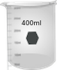
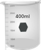

गाइड
1. लगभग 3 × 10 की ताकत का एक मानक K2Cr2O7 जलीय घोल तैयार करें-30.01 N H2SO4 में M (यहाँ वर्णित प्रयोगों के लिए हमने ताकत = 3.16 × 10 के घोल का उपयोग किया है-3एम। यह स्टॉक समाधान के रूप में उपयोग किया जाता है।
2. उपरोक्त स्टॉक समाधान से, K2Cr2O7 समाधान के पांच अलग-अलग सांद्रता तैयार करें: कहते हैं, 0.158 मिमी, 0.316 मिमी, 0.474 मिमी, 0.632 मिमी और 0.790 मिमी।
3. कंप्यूटर और साधन शक्तियों पर स्विच करें; साधन के 'वार्म-अप' के लिए 30 मिनट तक प्रतीक्षा करें।
4. साधन में एक प्रकाश स्रोतों (यूवी और दृश्यमान) का चयन कर सकता है, भट्ठा चौड़ाई, स्कैन गति और% संप्रेषण या शोषक प्रदर्शन, ब्याज की तरंग दैर्ध्य रेंज, आदि का चयन कर सकता है।
5. एक दिए गए पथ की लंबाई (जैसे, 1 सेमी) के साथ दो साफ और सूखे ग्लास (केवल दृश्यमान रेंज स्कैन के लिए) या क्वार्ट्ज क्यूवेट लें।
6. नमूना रिक्त (aq। 0.01 एन H2SO4 वर्तमान मामले में) के साथ एक क्युवेट भरें और सबसे कम एकाग्रता के साथ जलीय K2Cr2O7 समाधान के साथ अन्य क्युवेट।
7. संदर्भ धारक में नमूना रिक्त स्थान और नमूना धारक में नमूना रखें।
8. स्कैन (ए या% टी बनाम λ) चलाएं।
9. इसी तरह स्पेक्ट्रल रन अन्य सभी नमूनों के लिए सबसे कम सांद्रता से शुरू होकर K2Cr2O7 के अगले उच्च सांद्रता के लिए किया जाता है। हर बार किसी को समाधान का एक छोटा सा हिस्सा लेने वाले क्युवेट को अगले विश्लेषण के लिए कुल्ला करना चाहिए।
10. अज्ञात K2Cr2O7 नमूने के लिए स्पेक्ट्रल रन किया जाता है।
11. अब अधिकतम अवशोषण (λmax) की तरंग दैर्ध्य का पता लगाएं, K2Cr2O7 के सभी सांद्रता के लिए दिए गए λmax में अवशोषण और इन डेटा युक्त एक तालिका बनाते हैं।
12. एक दिए गए λmax के लिए अवशोषण बनाम एकाग्रता की साजिश रचकर एक अंशांकन साजिश का निर्माण करें। इस प्रकार एक K2Cr2O7 के दो शिखर पदों के लिए दो अंशांकन भूखंडों का निर्माण करता है।
13. अंशांकन भूखंडों की ढलानों को निर्धारित करें और इसलिए λ के संबंधित मूल्य।
14. दो अंशांकन भूखंडों से अज्ञात K2Cr2O7 समाधान की एकाग्रता का निर्धारण करें।

पोटेशियम डाइक्रोमेट की एकाग्रता

 
